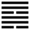

(Quẻ số 57)

Thuần Tốn (巽 xùn)
Lâm vào cảnh ở quê người thì thái độ nên thuận tòng người, cho nên sau quẻ Lũ tới quẻ Tốn. Tốn là gió mà có nghĩa là thuận, là nhập vào.
Thoán từ:
巽: 小亨, 利有攸往, 利見大人．
Tốn: tiểu hanh, lợi hữu du vãng, lợi kiến đại nhân.
Dịch: Thuận thì hơi được hanh thông, tiến hành thì có lợi, lựa bậc đại nhân mà tin theo thì có lợi.
Giảng: Quẻ này có một hào âm ở dưới hai hào dương, là âm phục tòng dương, nên gọi là Tốn. tiểu nhân mà phục tòng quân tử thì có thể tốt, nhưng phải có việc để tíến hành, chứ không phải chỉ ở yên mà tốt, lại phải lựa bậc đại nhân (có tài, đức) mà tin theo. Đại nhân trỏ hào 2 và hào 5, cũng mà dth, tiểu nhân là hào 1 và hào 4. Nhất là hào 5, đắc trung lại đắc chính nữa, 1 và 4 đều phải theo hào đó.
Đại tượng truyện Giảng: trên là gió, dưới là gió (Tốn), là có hai luồng gió tiếp tục theo nhau. Người quân tử tiếp tục xuất phát mệnh lệnh để thi hành chính sự, mà thiên hạ phục tòng, cũng như vạn vật ngả theo gió.
Ý nghĩa các hào:
1.
初六: 進退, 利武人之貞．
Sơ lục: tiến thoái, lợi vũ nhân chi trinh.
Dịch: Hào 1, âm: Tiến lui tự do, thêm vào cái chí hướng bền của hạng võ dũng thì có lợi.
Giảng: Hào này âm nhu ở dưới cùng quẻ Tốn là người nhu thuận thái quá, còn nghi ngờ, không cương quyết tiến hay lui, không thể làm gì được; Hào từ khuyên phải theo cái chí kiên cường của hạng người võ dũng thì mới trị được tật nghi hoặc.
2.
九二: 巽在床下, 用史巫 紛若, 吉,无咎．
Cửu nhị: Tốn tại sàng hạ, dụng sử vu phân nhược, cát, vô cữu.
Dịch: Hào 2, dương: Thuận nép ở dưới giường, dùng vào việc lễ bái, đồng cốt rối ren thì tốt, không có lỗi.
Giảng: Hào dương mà ở vào vị âm thời Tốn (thuận), nên quá thuận đến nỗi nép ở dưới giường. May àm đắc trung, không phải là kẻ siểm nịnh, mà lại có lòng thành; trong việc tế thần, mà như vậy thì tốt, không có lỗi. “sử” là chức quan coi việc tế, “Vu” là chức quan coi về việc trừ tai hoạ, như đồng cốt. “Phân nhược” (rối ren) dùng để tả việc cúng tế, cầu thần.
3.
九三: 頻巽吝．
Cửu tam: Tần tốn, lận.
Dịch: Thuận tòng quá nhiều lần (quá mức), đáng xấu hổ.
Giảng: Hào này quá cương (dương ở vị dương), bất đắc trung, vốn nóng nảy, kiêu căng, thất bại nhiều lần, sau mới làm bộ tự hạ, thuận tòng, nhưng lại thuận tòng quá mức, việc gì cũng thuận tòng dù không phải lúc, đáng xấu hổ, R. WilheLm Giảng: suy nghĩ đi suy nghĩ lại nhiều lần kĩ quá, mà không quyết định hành động, xấu hổ.
4.
六四: 悔亡, 田獲三品．
Lục tứ: Hối vong, điền hoạch tam phẩm.
Dịch: Hào 4, âm: Hối hận mất đi; đi săn về, được chia cho ba phần.
Giảng: Hào này âm nhu, hào 1 ứng với nó cũng âm nhu, không giúp gì được nó, mà lại bị kẹt giữa 4 hào dương ở trên và dưới, xấu; nhưng nhờ nó đắc chính, địa vị cao (ở ngoại quái, sát hào 5) mà lại có đức tự khiêm, thuận tòng, nên được trên dưới mến, chẳng những không có gì hối hận mà còn được thưởng công. Thời xưa đi săn về, chia làm 3 phần (phẩm vật): một phần để làm đồ tế, một phần để đãi khách, một phần giao cho nhà bếp. Có công lớn mới được chia như vậy.
5.
九五: 貞吉, 悔亡, 无不利, 无初有終.
先庚三日, 後庚三日．吉．
Cửu ngũ: Trinh cát, hối vong, vô bất lợi, vô sở hữu chung.
Tiên canh tam nhật, hậu canh tam nhật, cát
Dịch: Hào 5, dương : giữ đạo chính thì tôt, hối hận mất đi, không có gì là không lợi, mới đầu không khá mà cuối cùng tốt; (đinh ninh như ) trước ngày canh ba ngày, (đắn đo như) sau ngày canh ba ngày, tốt.
Giảng: Hào này ở thời Tốn, phải thuận tòng, mà bản thể và vị đều là dương cả, mới đầu không tốt (vô sợ), e có điều hối hận, may mà đắc trung, đắc chính, hợp với tư cách một vị chủ, cứ giữ đức trung, chính ấy thì sau sẽ tốt (hữu chung), hối hận mất hết mà không có gì không lợi. Tuy nhiên, muốn kêt quả được tốt thì trước khi hành động, canh cải, phải đinh ninh cân nhắc cho kỹ, rồi sau khi canh cải phải khảo nghiệm chu đáo.
Trong thập can: Giáp, Ất, Bính, Đinh, Canh Tân, Nhâm, quí, Canh đứng hàng thứ 7, quá giữa, tới lúc phải thay đổi. (chữ Canh trong hào từ 庚cũng dùng như chữ Canh 更 là đổi) Ba ngày trước ngày Canh là ngày Đinh, chữ Đinh 丁 này mượn nghĩa chữ đinh 叮嚀 (đinh ninh); ba ngày sau ngày Canh là ngày Quí, chữ quí này 癸 mượn nghĩa chữ quĩ 揆度 (quĩ đạc là đo lường)
Cách dùng chữ ở đây cũng như cách dùng chữ trong Thoán từ quẻ Cổ.
6.
上九: 巽在床下, 喪其資斧, 貞凶．
Thượng cửu: Tốn tại sàng hạ, táng kì tư phủ, trinh hung.
Dịch: Hào trên cùng, dương: Thuận nép ở dưới giường, mất đồ hộ thân, cứ giữ thói xấu đó thì càng bị hoạ.
Giảng: Ở trên cùng quẻ Tốn là thuận tòng đến cùng cực như kẻ nép ở dưới giường; tới nỗi đức dương cương – ví với đồ hộ thân (tư phủ) của mình cũng mất luôn. Cứ giữ thói xấu xa, đê tiện, siểm nịnh đó thì càng bị hoạ.